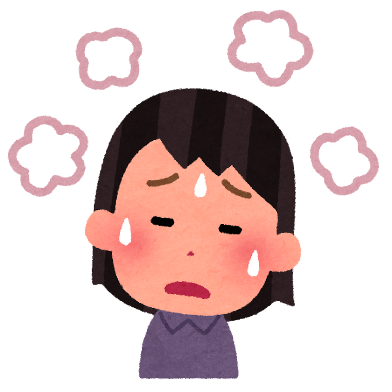
あなたは今起きました。頭を触ってみるとやっぱりあつい。まず、どうしますか？
Click a card for English. Click again for Japanese.

あなたは今起きました。頭を触ってみるとやっぱりあつい。まず、どうしますか？
熱が40度を越えてしまいました。どうしますか？
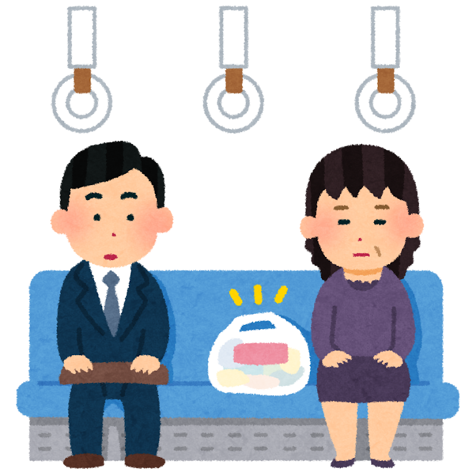
あなたの席がこの人に取られました。言ってやってください！
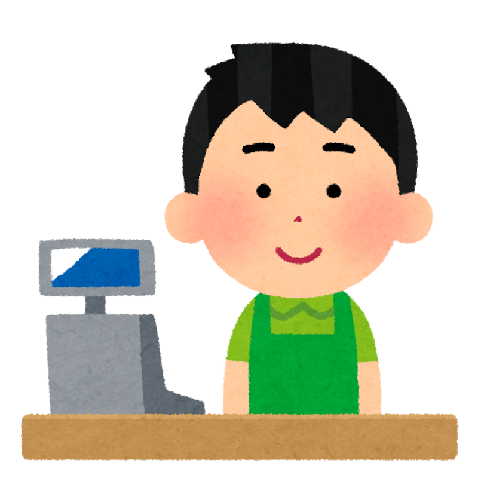
お弁当を温めようとしたら、財布を家に忘れたことに気づきました。店員さんの岩崎さんに何と言いますか？
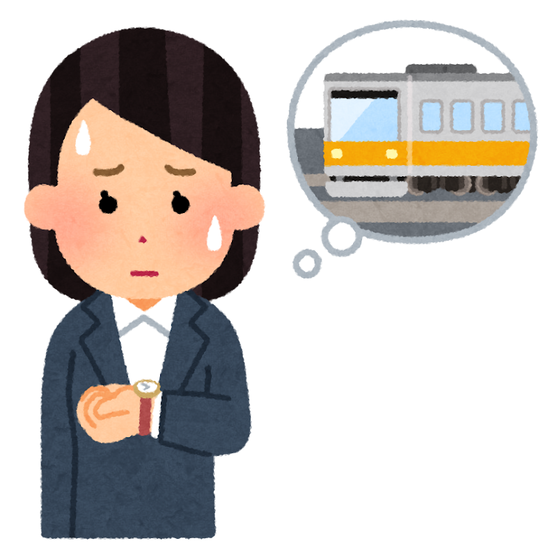
友達のりかちゃんとの大事な約束に間に合いません。次の電車まで８分。友達に何を伝えますか？
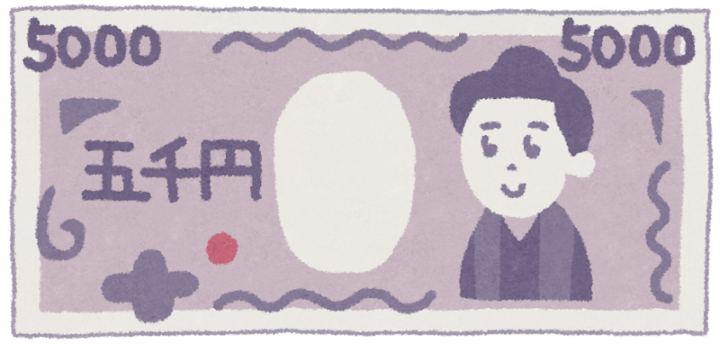
色々な食べ物のアレルギーがあります。注文の前に、店員さんにちゃんと伝えてください。
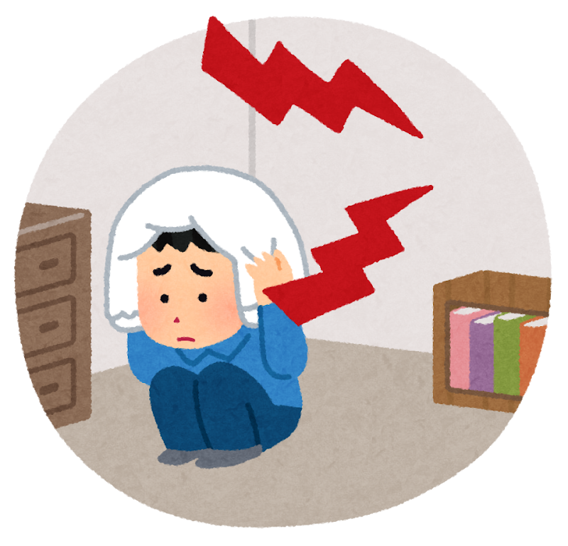
夜中なのに隣がうるさいです。明日仕事があります。どうしますか？言ってみてください。
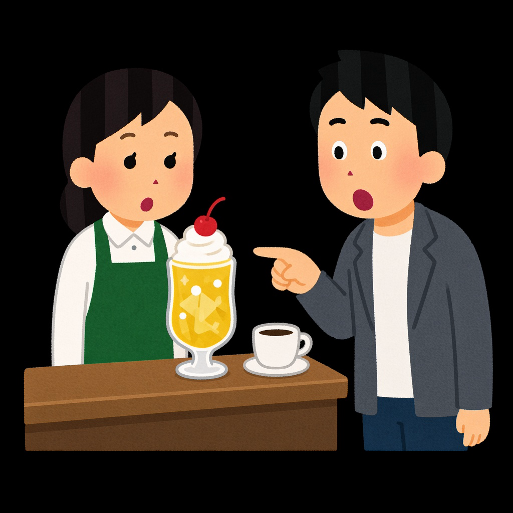
頼んだものと違う飲み物が来ました。怒らずに、でもはっきり言ってください。
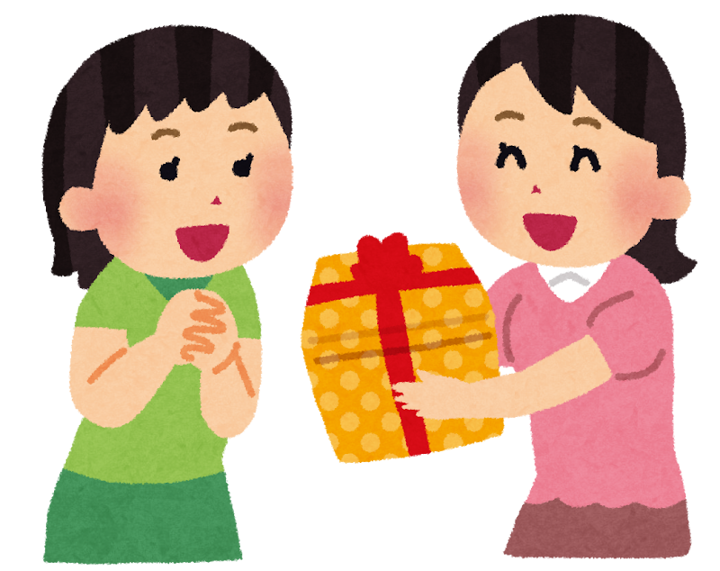
今日は友達のセラの誕生日です。大事なプレゼントを考えて買ったんだけど、渡す前に何と言いますか？
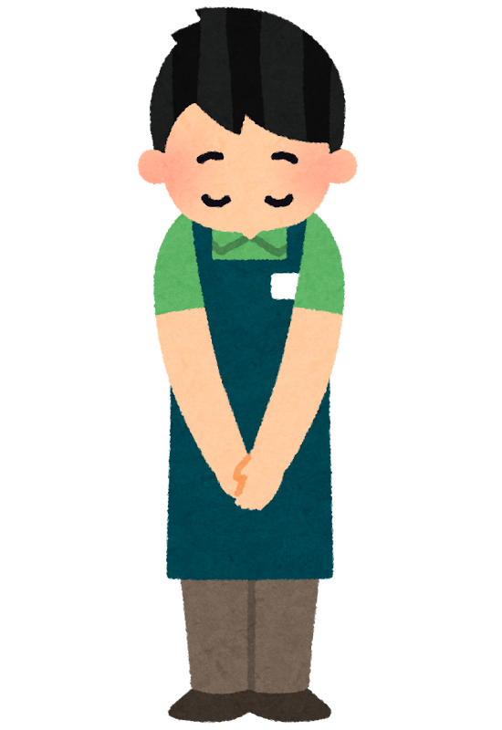
店員さんの大和さんがドライヤーを買うのにとても親切でした。お礼を言ってください。
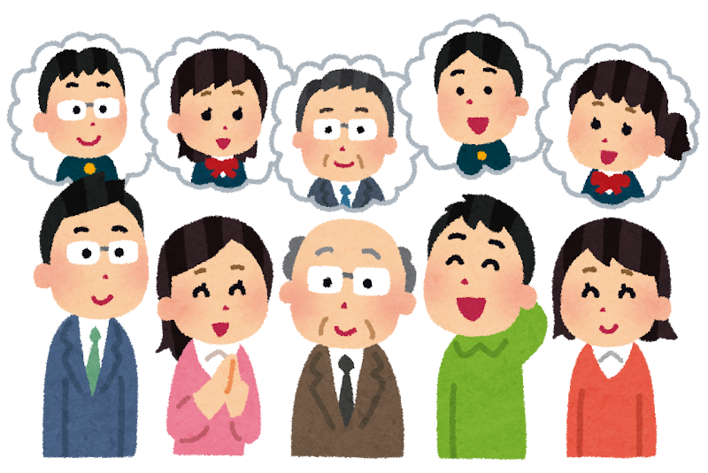
久しぶりに会えた友達の家族とばったり会いました。最初に何と言いますか？
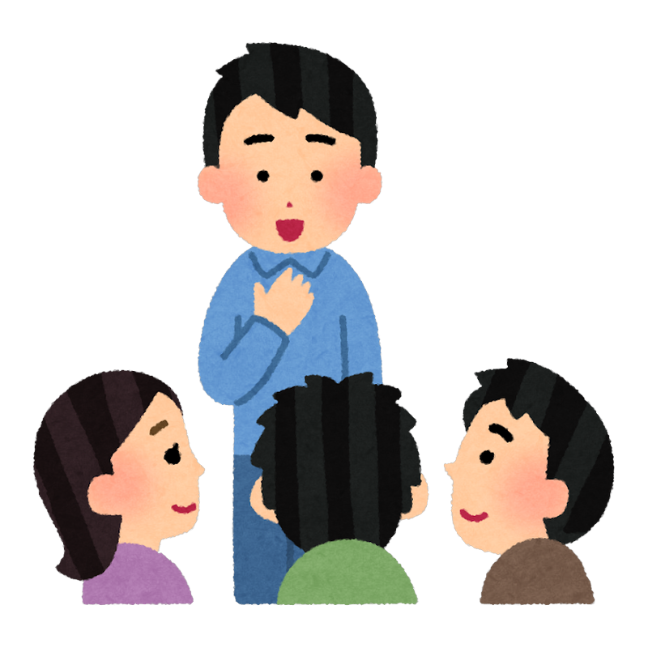
初めて会う人です。自己紹介をしてください。
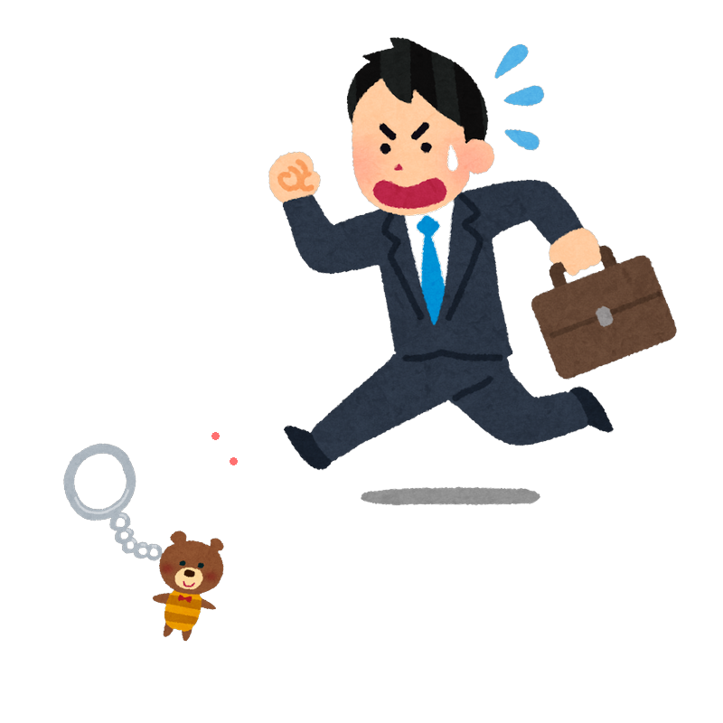
向こうの人がキーホルダーを落としました。本人は気づかずに、とても急いで歩いて行きます。どうしますか？
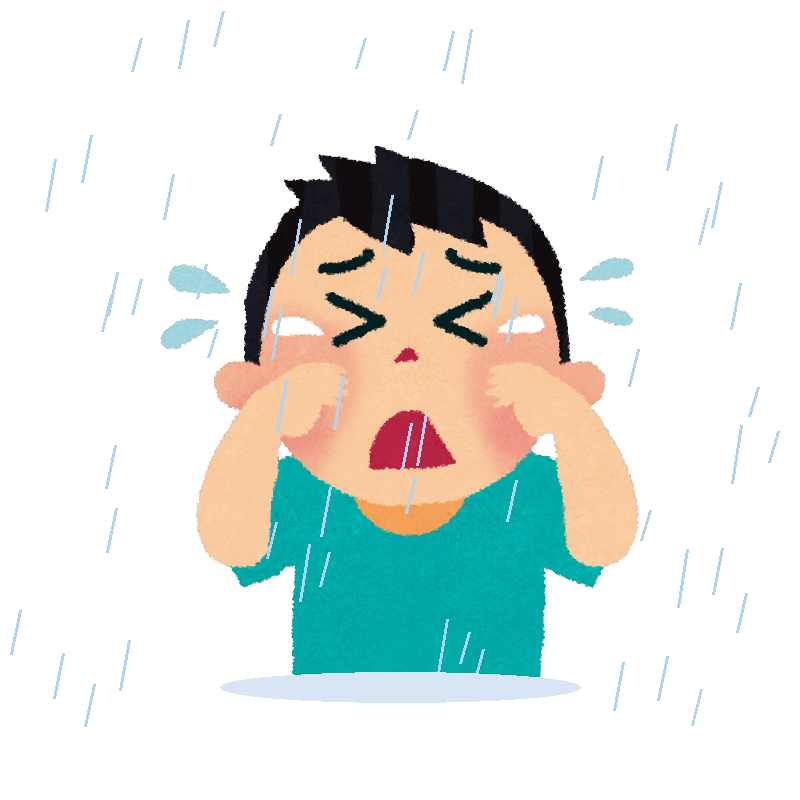
雨が降っています。コンビニの前に、傘を持っていない悲しそうな子どもがいます。どうしますか？
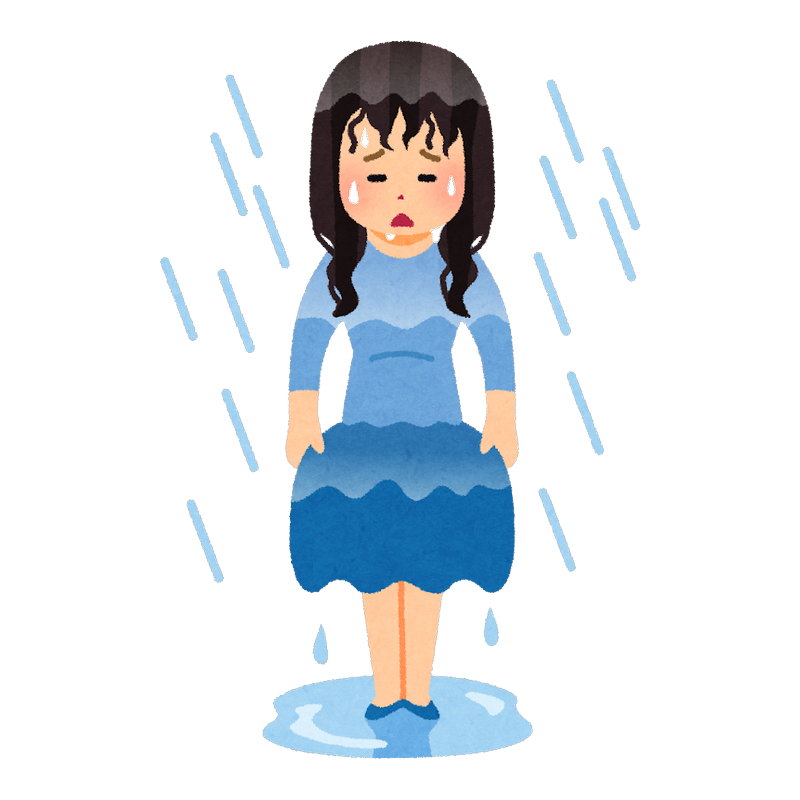
駅へ向かって歩いているけど、急に雨が降り始めました。家に傘があるけど、戻るのはめんどくさいです。どうしますか？
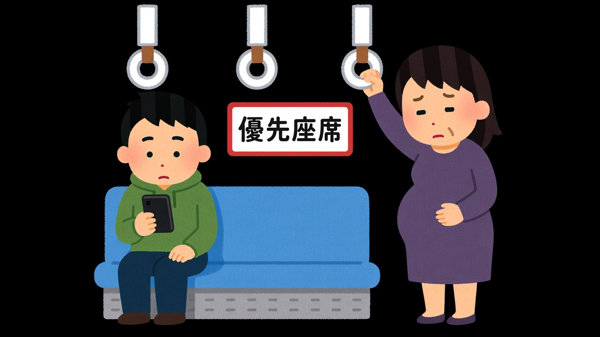
優先座席に、スマホを見ている若い人が座っています。妊婦さんが立っています。席をゆずってもらうように、その人に言ってください。
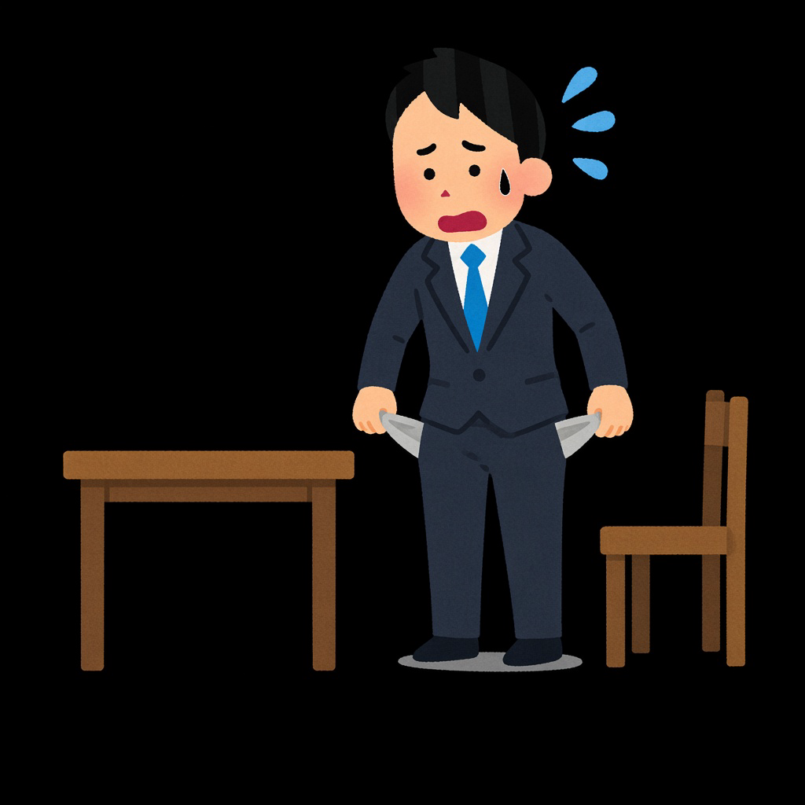
鍵が見つかりません。自分に何と言いますか？